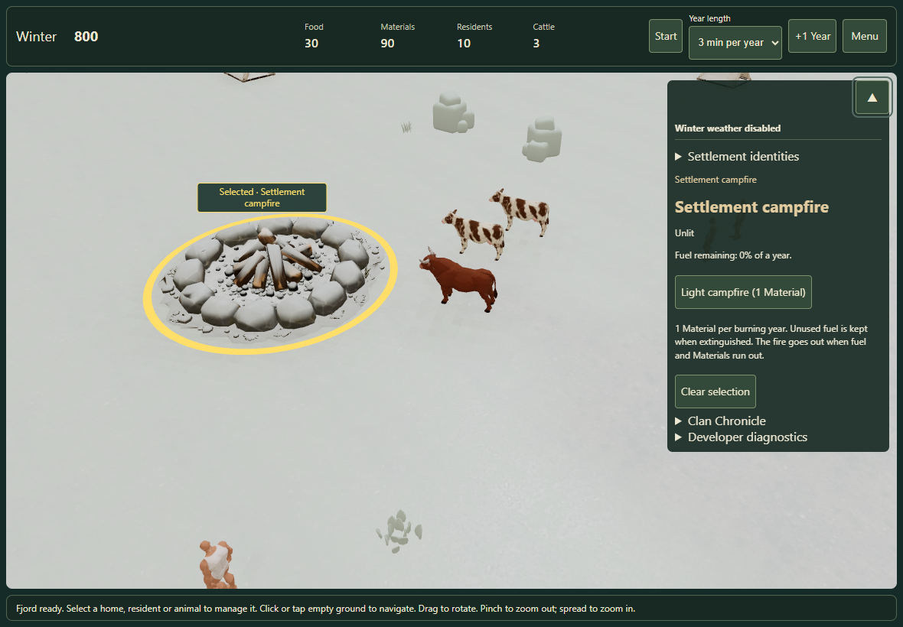
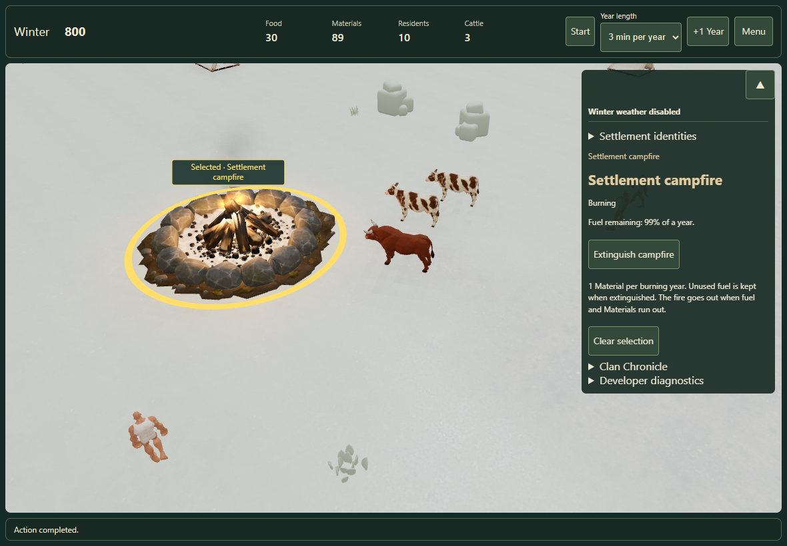
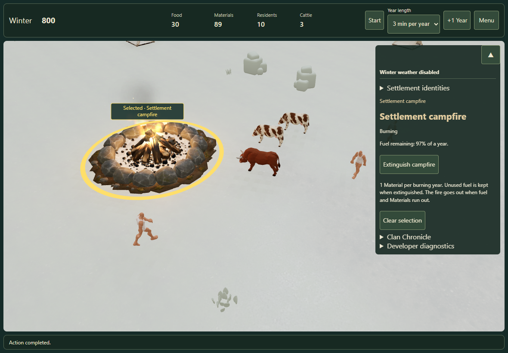

Campfire: fuel, fire and winter thaw
Select the stone ring to light or extinguish the fire. One Material buys one year of burning; unused time is kept when extinguished. The clock controls both fuel use and the effect.
Open Fjord settlement · Test report · Recorded results



Checks
Build and 54 targeted tests passed. The browser run passed touch selection, fuel cost, gradual thaw, pause, effect quality, reduced motion, repeated save/load, world quality, extinguishing, relighting, +1 Year and empty-stock controls. No browser errors were recorded.
Touch was emulated in Edge; physical iPad support needs owner review. Hidden-tab suspension was not observable in this headless run. See the report for exact boundaries.
Recorded timing
| Mode | Mean interval | p95 | Particles | Scene draw calls |
|---|---|---|---|---|
| off | 61.7 ms | 100.1 ms | 0 | 33 |
| low | 32.2 ms | 50.0 ms | 18 | 38 |
| normal | 44.4 ms | 83.3 ms | 38 | 38 |
90 RAF intervals per mode, uncontrolled laptop load and different actor poses between warm-ups. These observations do not isolate GPU cost or establish a performance ranking. Raw sampled intervals are retained; earlier and warm-up frames are not.
Campfire spike for #97. Weather particles, chimney smoke, ceremonies and gameplay warmth remain future work.